From offer letter
to first day of class.
One place to understand the summer between accepting your offer and starting medical school, with official Faculty pages placed first whenever they control the details.
Student-made guide · Content checked July 2026
Official Faculty resources.
These pages control the requirements. This guide helps you see how they fit together, but it does not replace your offer letter or the current Faculty instructions.
Incoming Students Hub
The Faculty's central page for accepted students. Use it to recover a current link if one in this guide changes.
Accepting Your Offer
OMSAS response, Response and Consent Form, tuition deposit, admission conditions, JOINid, UTORid, and TCard setup.
Registration Requirements
The incoming-student entry point for the requirements completed before registration.
Registration Requirements & Requests
The detailed current-year list, deadlines, forms, upload instructions, and requests such as confirmation of enrolment.
The shape of your summer.
The sequence is useful. Exact dates are not always fixed. Confirm anything marked year-specific against your offer letter, Faculty email, or the linked official page.
01
Paperwork
Accept your offer on OMSAS
Submit through the OMSAS portal and keep the confirmation email. Your offer letter is the authority for your response deadline and any conditions.
Official: Accepting Your Offer ↗Watch for your OMSAS receipt
OMSAS sends an automated email confirming that your response was received. Keep it with your acceptance records.
Welcome email from the Faculty
Watch for Faculty emails with registration forms, events, and next steps. Processing time varies, so do not treat an upper-year timeline as a deadline.
Submit both copies of your Consent Form
The same signed Response and Consent Form is submitted twice: an electronic copy through the secure link and a hard copy to UME Enrolment Services by mail or in person. Follow the signature and deadline instructions in your offer package.
Official submission instructions ↗Pay your tuition deposit
Pay through ACORN using the method specified by the Faculty. Personal cheques, certified cheques or money orders, and bank transfers are not accepted.
ACORN ↗Send your official transcript to OMSAS
Only required if your offer has a degree conferral condition. Sent directly from your home university's registrar to OMSAS. Do not send to the UME office.
Setup
Activate JoinID, then UTORid
JoinID gives you ACORN access. UTORid unlocks the library, course registration, and your @mail.utoronto.ca email.
UTORid & TCard activation ↗Submit TCard photo and identity documents
Three-step online process to verify your identity and submit your photo. Physical card pickup happens once you're on campus, usually in August or September.
Full TCard guide ↗Milestone
Confirmation email arrives
The Faculty may send a confirmation after processing your acceptance materials. Check that it accounts for:
- OMSAS acceptance
- Tuition deposit
- Electronic copy of response and consent forms
- Hard copy of response and consent forms
Timing varies. If something appears outstanding after your materials should have arrived, contact UME Enrolment Services rather than relying on another cohort's timing.
Connect with the cohort.
The community spaces that make UofT MD feel like a cohort. None of this is on a Faculty page.
Student-run links · Checked July 2026
The 3T0 Discord
Where roommate matching, used-textbook trading, event invites, and day-to-day cohort life happen.
To join: verify with two documents that show your name. Your OMSAS Email (Amendment Confirmation showing your decision to accept) and your UofT MD 3T0 Offer Email or Letter.
Join the 3T0 Discord ↗Facebook groups
- UofT Med 3T0 Congrats Cohort welcome group. The first one to join after accepting.
- UofT Med Opportunities Common Shared opportunity board across UofT MD years. A join code will be sent out for 3T0s.
- Opportunities UofT-wide opportunities (research, programs, scholarships).
- Med Opportunities Canada National medical-student opportunity board.
- Physician Financial Independence Active financial discussion group. Closed group with a vetting step. Ask an upper-year via Discord for an invite.
02
Anytime · Self-paced
Financial Resources e-module
The Faculty's official walkthrough of LOCs, OSAP, bursaries, and institutional support. Work through this before any bank appointment.
Financial Resources Explorer ↗Dates vary · Optional
Welcome calls from upper-years
Optional check-in calls from current MD students to answer questions about student life and the GTA. Not mandatory; just a friendly hello.
Events & Webinars ↗Date varies · St. George
St. George Academies Webinar
Meet the Academy Directors. They share what makes each academy distinct and the clinical learning opportunities at each.
Date varies · MAM
Mississauga Academy of Medicine Webinar
For MAM-placed students. Faculty leadership and MAM student reps speak to student life and clinical experiences across Trillium Health Partners.
Date varies · Optional
Financial Aid & Awards Webinar
The Financial Aid team covers tuition, scholarships, and how to access funding. Recordings are usually shared after.
Required to open LOC
Request your Letter of Confirmation
Banks won't finalize your Professional Student LOC without this. The Faculty processes requests via Qualtrics. Submit early so it's ready when needed.
Letter of Confirmation form ↗May – June
Open a Professional Student LOC Time-sensitive
Compare offers from Scotia, RBC, CIBC, TD, and BMO. Differences are at the margins. You'll need your Letter of Confirmation to finalize.
See the Finances comparison →Apply early
Apply for OSAP (or your provincial equivalent)
Government aid may include grants as well as loans. Apply early enough for processing before fall fees, and use ACORN's deferral process if eligible.
OSAP & bursary timeline →Per email
Admission bursary acceptance (if applicable)
Bursary recipients get a separate email with claim instructions. The acceptance steps differ from OSAP. Read the email and complete any forms by the deadline given.
Watch Faculty email
Watch for the Temerty Grant Application All students
The Faculty's in-program grant application is separate from OSAP and admission awards. Opening dates change, so watch your UTmail and the official financial aid page.
MD Financial Aid ↗Per Faculty email
Submit your Academy Selection survey St. George only
In early June you'll receive a survey to rank FitzGerald, Peters-Boyd, and Wightman-Berris. Read the academy descriptions carefully before ranking. MAM students are set in their offer letter.
Read about the academies →Per Faculty email
Academy assignment arrives St. George only
Your academy assignment is sent by email. Use it to refine your commute and housing search; assignment questions should go to the Faculty.
May – August
Start your housing search Time-sensitive
Some students begin early; others wait for an academy assignment before narrowing the commute. The Housing guide compares neighbourhoods, residences, documents, and search tools.
Open the Housing guide →03
The full list, current deadlines, forms, and submission methods live on the Faculty's Registration Requirements & Requests page. Several items can be started in May, but always use that page's current-year form.
What's typically on the list
The tiles open the official requirements page containing the current form, deadline, and submission instructions.
04
By the Stethoscope Ceremony
Buy your stethoscope
Students buy their own stethoscope. Buying before the ceremony is recommended; if you do not have one that day, one can be borrowed free for the draping.
2026 equipment lookbook ↗2026 orders close August 3
Order equipment and optional cohort items
Use the current lookbook to decide what you actually need, then place the order through the U of T Bookstore. Cohort clothing is optional.
U of T Bookstore order page ↗On arrival in Ontario
Confirm OHIP / health insurance
If you are moving to Ontario and may be eligible, check the provincial criteria and apply in person. Ontario states there is no waiting period for eligible applicants. International students and anyone not eligible for OHIP should confirm their U of T health coverage separately.
Official OHIP eligibility and application ↗June – August
Move to Toronto
No fixed deadline. Most people aim to be moved in and settled in time for O-Week. Avoid September 1 if possible; it's the busiest moving day of the year and movers cost significantly more.
2026 registration is open
Register for O-Week Time-sensitive
The O-Week team controls registration, price, schedule, and changes. Use its current page rather than a copied schedule here.
Official O-Week site ↗05
By Aug 24, 2026
Pay or defer fall fees
Pay your fall term tuition and incidental fees in full, or file a fee deferral on ACORN. With OSAP, your fees are due September 30 once funding arrives.
Aug 17–21, 2026
O-Week
The O-Week team publishes which sessions require attendance and which are optional. Check its site for the current schedule and last-minute changes.
See the O-Week guide →August 24, 2026
First day of medical school
Everything on this page was the run-up to this moment.
What you'll need to buy.
You do not need to buy everything in May. Use the current lookbook and bookstore page before placing an order.
Product list checked against the 2026 lookbook
Common clinical equipment
Stethoscope
Students purchase their own. Aim to have one before the ceremony; one can be borrowed free for the draping if needed.
Clinical Skills Kit
The current lookbook lists the components and available bundle. Confirm the included pieces before ordering separately.
Lab coat
Any white lab coat works. Doesn't need to be UofT-branded or program-specific.
Dissection kit
Check the current lookbook for the listed components and ordering option.
Blood pressure cuff
Useful for clinical-skills practice. Check the current lookbook before purchasing one separately.
Gloves
Standard nitrile exam gloves. Know your size before buying in bulk.
Cohort tradition
Patagonia jacket
The cohort jacket. Optional but most people get one. Watch the Discord for the order window.
Class merch
Hoodies and other items. A new catalogue will be posted for 3T0; watch the Discord.
A few details that depend on you.
- Should I wait for my academy before signing a lease?
- You do not have to, but knowing your academy can make commute comparisons easier. Use the Housing guide to compare locations against your likely teaching sites rather than relying on one neighbourhood recommendation.
- Which health-coverage information applies to me?
- If you already have valid OHIP, this may only be a quick check. Students moving from another province or country should review their eligibility and confirm any U of T plan that applies to them. Do not assume that another student's coverage path matches yours.
- Do I need a line of credit?
- Not everyone does. Compare your available funding, expected costs, and timing before opening one. The Finances guide explains the options and questions to bring to a bank appointment.
The O-Week site is the source of truth for all orientation events.
The full schedule, RSVP forms, dress codes, location pins, last-minute changes, and the team's bios all live on the dedicated O-Week site, maintained by the team. Bookmark it the moment you receive your offer.
Open uoftmedsoweek.caThe site is refreshed each year by the incoming O-Week team. The link above goes to the current year's site.


Historical Photo Archive · Class of 2T9 · 2025
The 2T9 photo archive.
A look back at O-Week 2025. Event names and photographs are historical and should not be used as the current schedule.
Upper years: submit photos01
Monday.
Aug 18, 2025
Welcome Picnic at Christie Pits.
The cohort heads west to Christie Pits Park as the official welcome wraps. Free dinner, sun on the lawn, the first time most of the class meets each other in casual clothes.


02
Tuesday.
Aug 19, 2025
Dean's Tea at Hart House.
A formal welcome from the Faculty inside Hart House. Tea, a few speeches, and the first chance to meet faculty in person.


MED Olympics on Front Campus.
Team-based outdoor games on the lawn between buildings. The kind of organized chaos that gets people who haven't talked yet to talk.


03
Wednesday.
Aug 20, 2025
Boat Formal on Lake Ontario.
A formal dinner cruise on the harbour as the sun goes down behind the city skyline. The first time the cohort dresses up for itself.

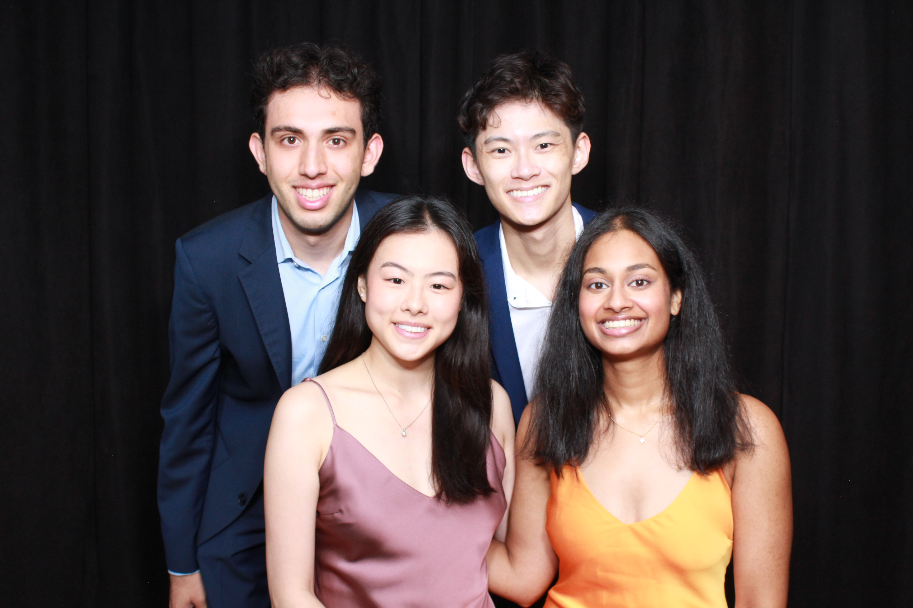
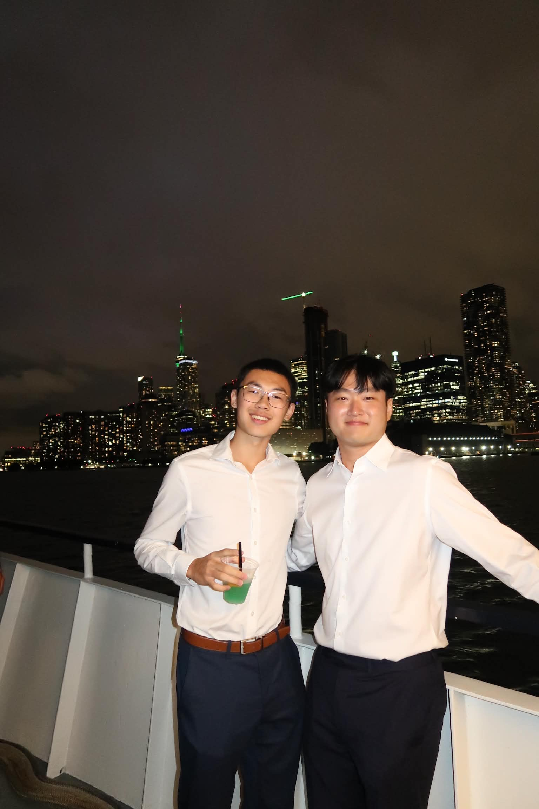
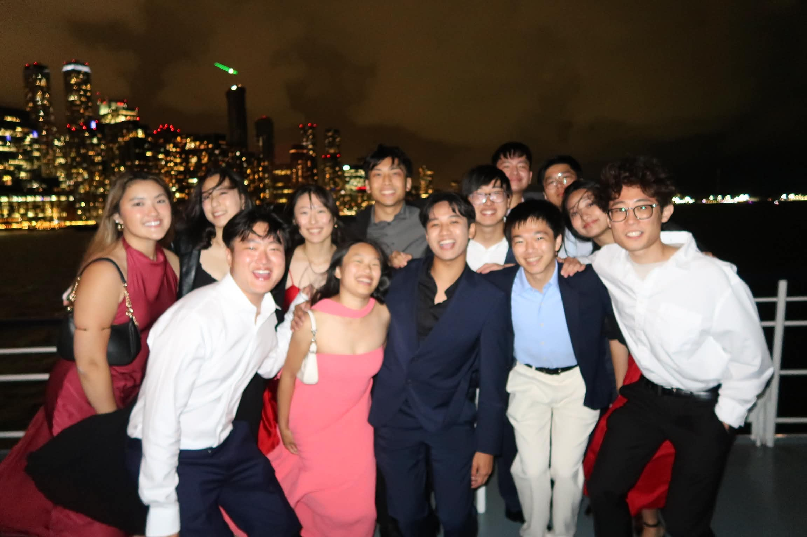

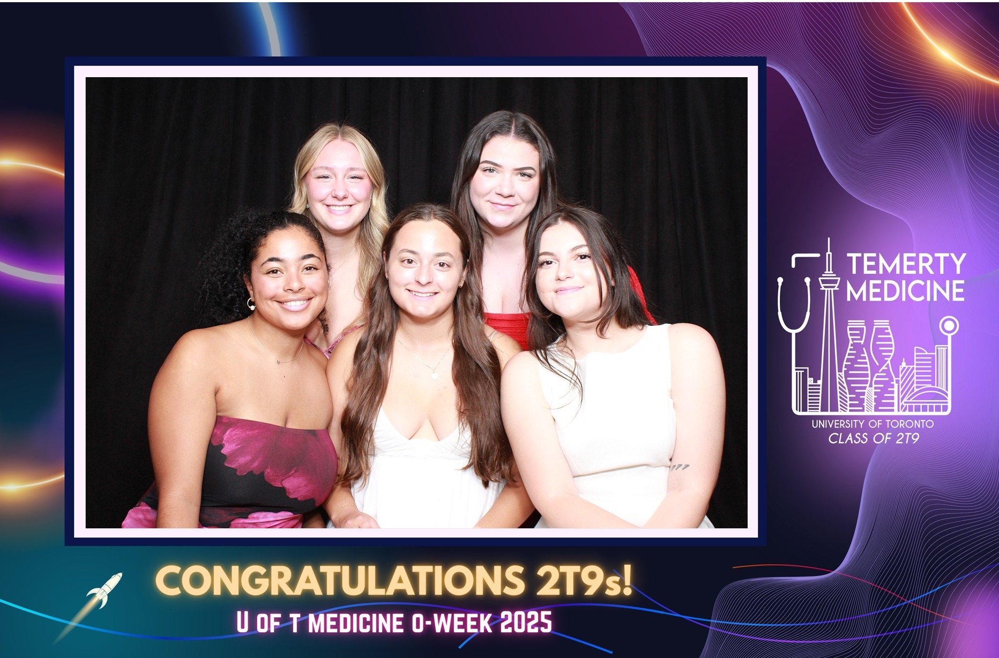
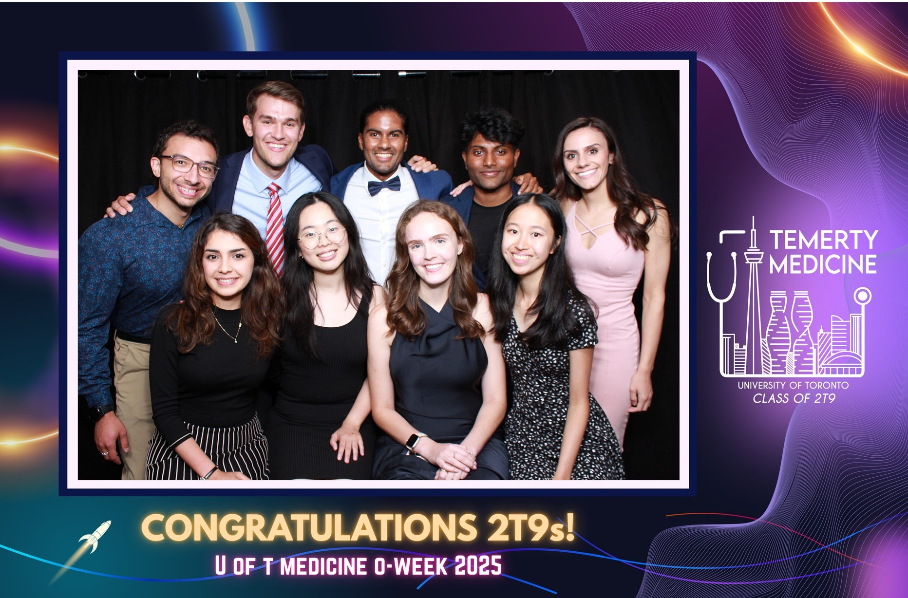
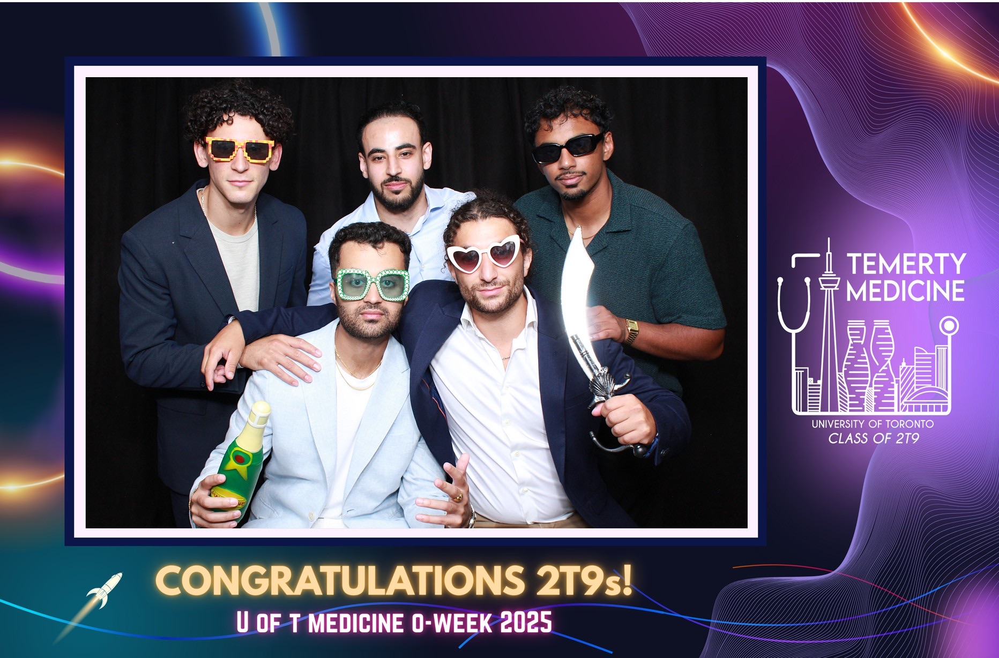
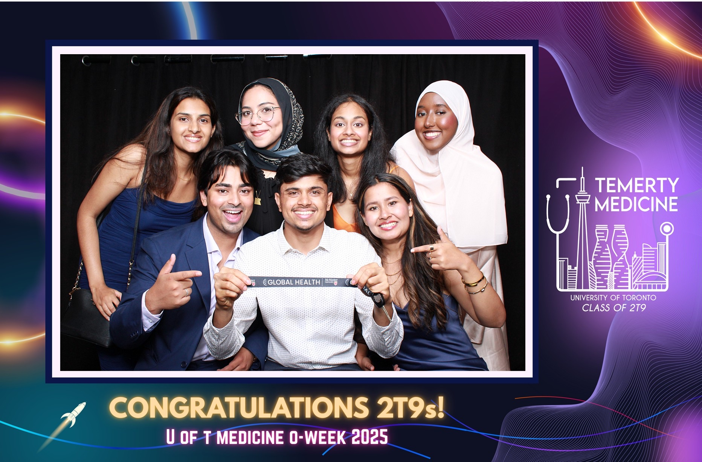
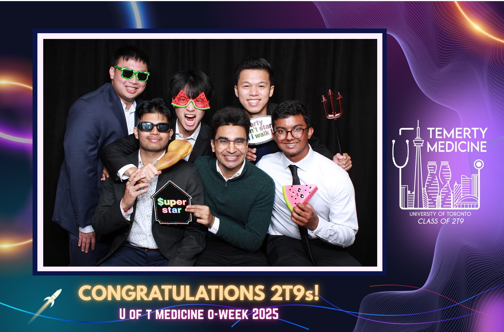
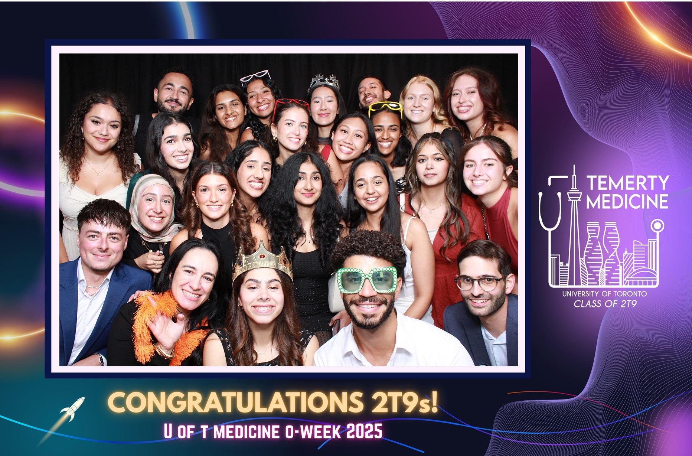
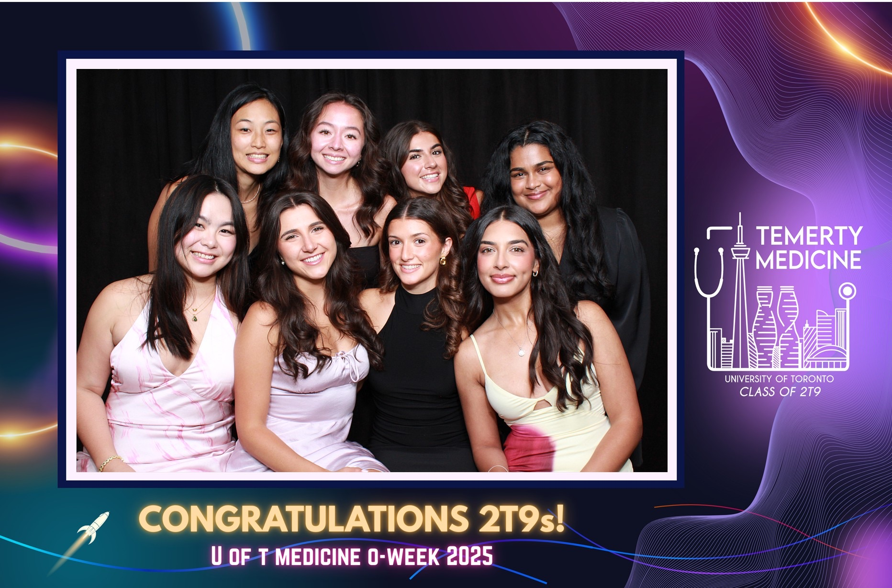
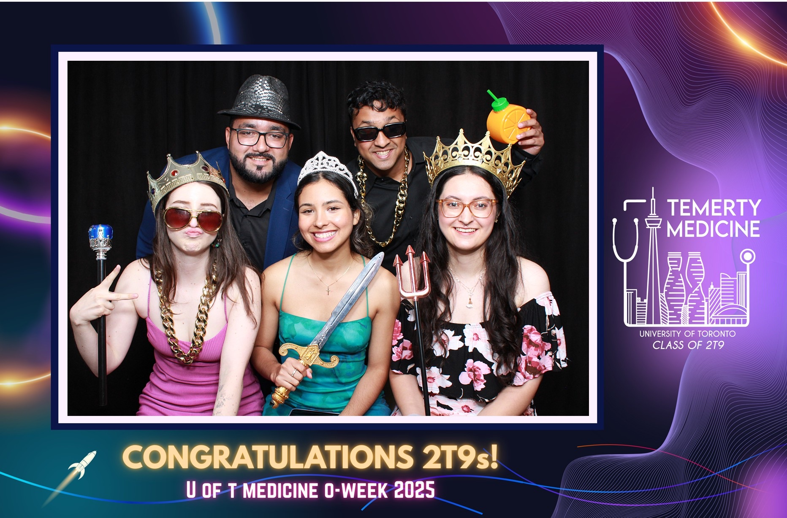
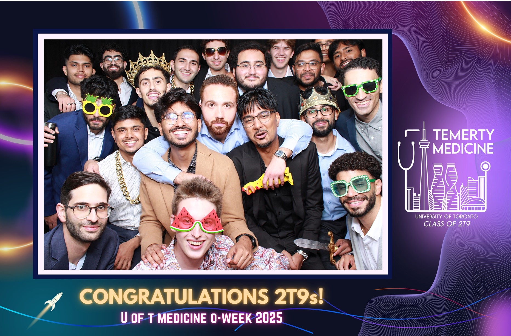
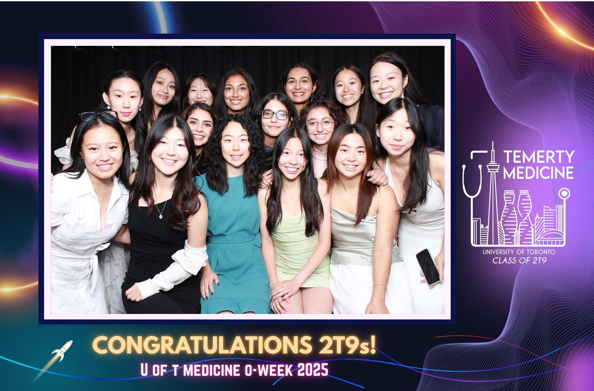
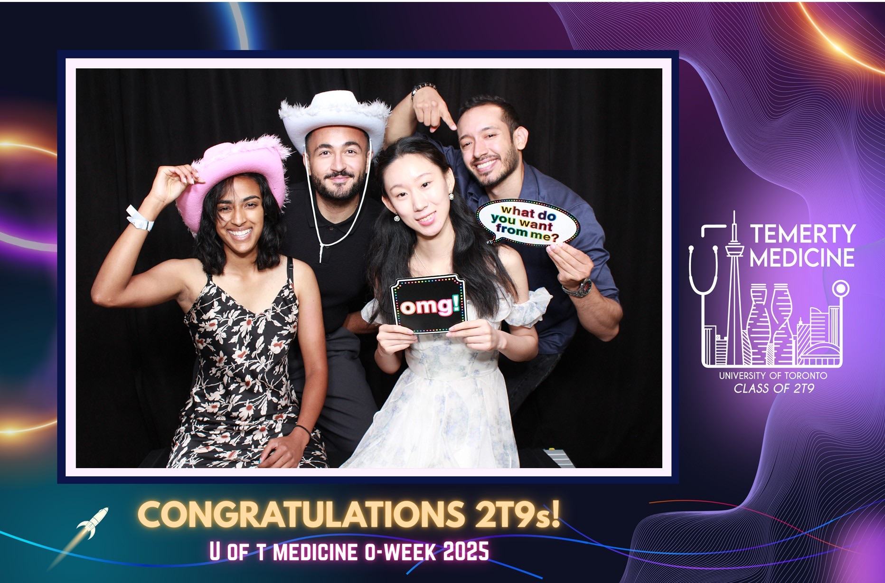
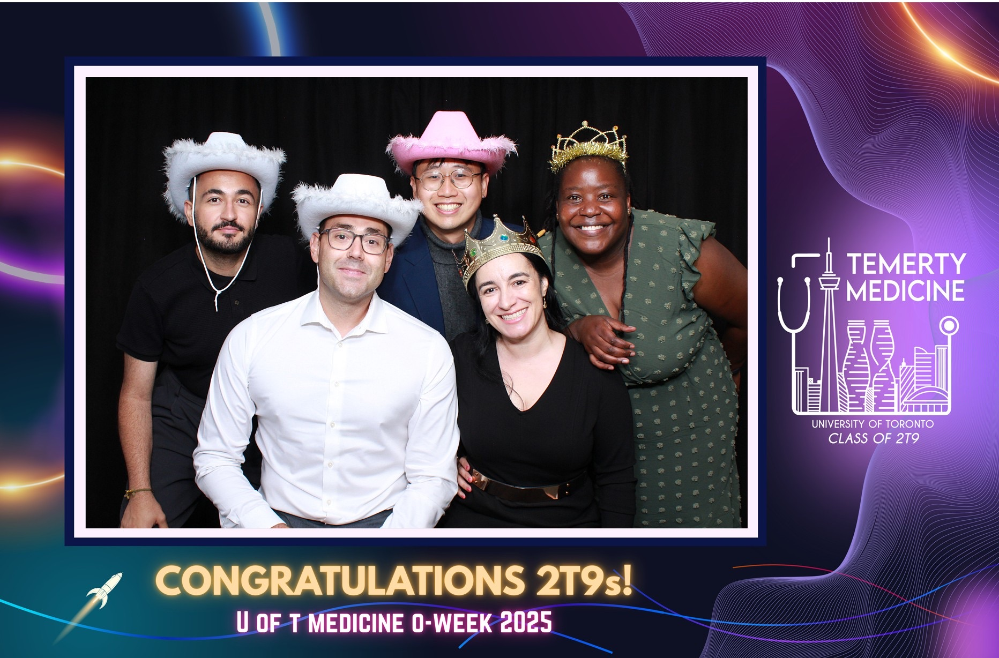
04
Thursday.
Aug 21, 2025
Board Game Night.
Team Blast: Survival Guide and board games to close out the week. Dinner's on us. Come hungry, leave knowing your team.


05
Friday.
Aug 22, 2025
Academy Day.
Each student spends Friday at their assigned academy meeting faculty, touring the home hospital, and getting a feel for the building they'll spend most of Foundations in.

Stethoscope Ceremony at Convocation Hall.
The closing ceremony of O-Week. Students bring the stethoscope they purchased for the draping; one can be borrowed free for the ceremony if needed.


Meet the people running it.
The O-Week team is a volunteer group from the year above the incoming cohort. Every member's bio, headshot, and role lives on the official site.
Official site
Meet the full O-Week team →
Names, photos, roles, and bios on uoftmedsoweek.ca